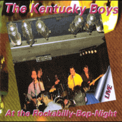

the Kentucky Boys - At the Rockabilly-Bop-Night (Album, 2000)
01 - On The Run (2:59)
02 - Sunglasses After Dark (2:17)
03 - Eileen (2:52)
04 - Proud To Be A Ted (2:15)
05 - Little Baby (3:12)
06 - Hello Josephine (3:12)
07 - You Aint Nothing But Fine (2:27)
08 - Senior Class (3:09)
09 - I Can Tell (3:13)
10 - Send Me Some Lovin (2:39)
11 - Pink Cadillac (2:20)
12 - Pretty Pearly (2:38)
13 - Betty Lou (2:09)
14 - I Remember You (3:25)
15 - Justine (2:20)
16 - Teddy Boy (3:51)
© Brainless :: [CD]
Notes
Review
095/366 (Project 366)
One more Live album! This time a Rockabilly band from Germany - the Kentucky Boys. Teddyboys' Rock'n'Roll and vivid atmosphere.
The dashing start of an attractive and furious song "On The Run"! However, Live album begins with the sound of a vinyl player (chicly), then crowd's сheering (appetizingly) and then the rhythm tune (mighty). Further only better - waving rhythm, surfin' Teds, tides of a nice instrumental song. Really want to listen to it out loud. Smooth theme and groovy with lovely backtunes. Twangy! The first track ends with the presentation of the following "Sunglasses After Dark". Lively Rock'n'Roll, vintage tune and feelings of live atmosphere. The sound spreads throughout the venue, mostly felt on vocals. Instruments flaunt one after another, and also just complement the background well! Twistin' and swingin'. I can also note very pleasant vocals and thanks to the public in German at the end of the song. Charming! Third track "Eileen" introduces Rockabilly tune, mood of Revival times. Boppin' and rockin'. Very diligent vocalist and you feel the action on stage. Rave on, "Proud To Be A Ted" is a pretty TeddyBoy Rock'n'Roll action. From tune to lyrics! Pretty glib guitarists, active backing vocals. Rock and Roll. Fifth track "Little Baby" with a German speakin' introduction and song itself is a very lovely and sweet tune that grows into a real heartbeating poem. Quite tender, but then in the end the vocalist invigorates the audience. And the boogie song begins, "Hello Josephine". Rocking enough and with all the specifics of the band - backing vocals, emotions, instrumental sparklin'. Then soft swampy Country rockin' with "You Aint Nothing but Fine". Unification of Country, Folk and Rockabilly by rockin' and rollin' way. Harmonica is clumsy there, but fine and sweet.
Advantages of these recordings and the band - nice and charming lead vocal; kind, positive, friendly atmosphere. German speaking inserts. They play pretty in their own way. Simple but somewhat tasteful. Recorded as is, basically.